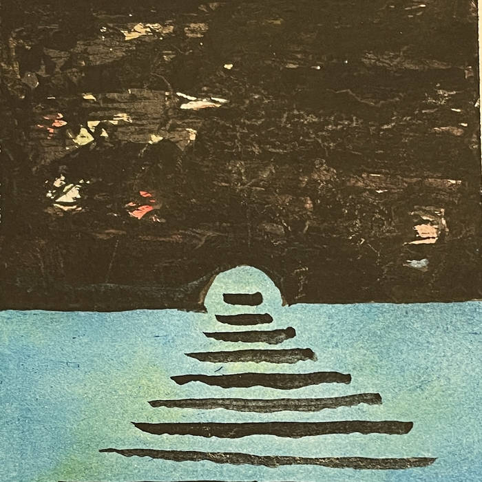
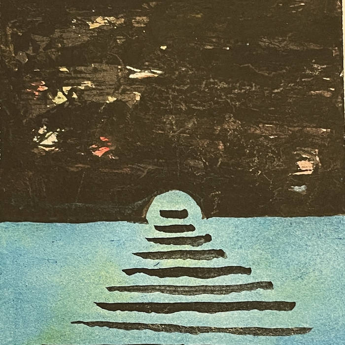

Grifter is an instrumental duo from Detroit, consisting of Evan Nistor on guitar, keyboard, and samples, and Jon Jackson on drums and marimba. Their music is a unique blend of psychedelic rock and jazz, featuring improvisational and spacey elements that create an immersive and grooving sound.

 
